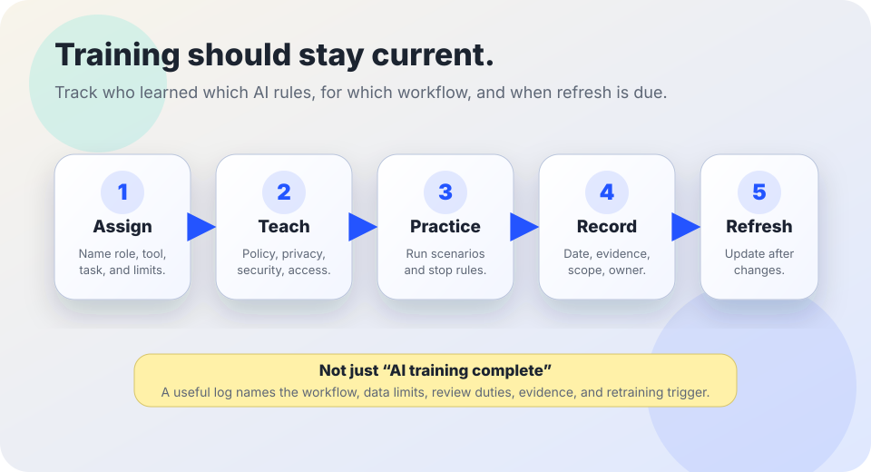

AI governance and operations
AI staff training log.
A lightweight record for tracking who has been trained on AI policy, privacy, security, accessibility, human review, data intake, incident response, and stop rules.
The short answer
If people are allowed to use AI in real work, somebody should be able to answer: who was trained, on what rules, for which tools, when, by whom, what changed afterward, and when retraining is due.
A training log is not proof that AI use is safe, lawful, fair, or accessible. It is a practical accountability record. It helps teams notice gaps before an incident: a new hire never learned the upload rules, a supervisor missed the appeal path, or a vendor update changed the tool before staff were retrained.

Why a training log matters
NIST’s AI Risk Management Framework emphasizes governance, mapping context, measuring risk, managing risk, documentation, monitoring, and accountable roles across the AI lifecycle. OMB guidance for U.S. federal agencies requires governance and risk-management practices for agency AI use, including workforce and oversight capacity. CISA’s Secure by Design guidance argues that security responsibilities should be built into normal practice rather than improvised after failures. The FTC’s personal-information guidance stresses knowing what information is collected, keeping only what is needed, protecting it, and disposing of it securely. WCAG 2.2 and DOJ web accessibility guidance remind teams that digital services and content need accessible design and operation.
Those sources do not all prescribe the same staff-training spreadsheet. The practical lesson is narrower: if AI policy depends on people making good decisions, the organization needs a visible way to train, refresh, and verify those decisions.
1. Record the minimum useful fields
| Field | What to write | Why it matters |
|---|---|---|
| Person or role | Name or role group, team, and supervisor where appropriate. | Shows who can use which AI workflow and who still needs training. |
| AI workflow | Approved tool, task, department, data class, and whether the person can upload files, approve output, or only request help. | Prevents generic “AI trained” status from hiding real permission differences. |
| Training topics | Policy, data minimization, document intake, source checking, accessibility, security, incident response, appeals, deletion, retention, and disclosure. | Makes gaps visible when a workflow has specific risks. |
| Evidence | Date, trainer or source, scenario completed, quiz or acknowledgment if used, and materials version. | Creates a checkable record without collecting unnecessary private details. |
| Refresh trigger | Review date, model update, vendor policy change, incident, role change, new data category, or new legal/policy requirement. | Keeps training from going stale as tools and duties change. |
Avoid recording sensitive personnel notes in the log. Keep only what is needed to show training status, scope, and follow-up.
2. Cover the topics people actually need
Allowed and forbidden uses
Which tools are approved, what tasks are allowed, which data must stay out, and who can approve exceptions.
Privacy and records
How to minimize data, classify documents, handle uploads, retain prompts and outputs, and respond to deletion requests.
Human review
When AI output must be checked, cited, corrected, appealed, escalated, or rejected before it affects people.
Security and prompt injection
How to treat files, links, pasted text, and unexpected tool instructions as untrusted input.
Accessibility and language access
How to avoid AI workflows that block disabled users, produce inaccessible content, or replace required language support.
Incidents and stop rules
When to pause use, preserve evidence, notify the right owner, repair harm, and update training materials.
3. Starter log template
| Date | Person / role | Workflow | Topics completed | Evidence | Refresh trigger | Owner |
|---|---|---|---|---|---|---|
| YYYY-MM-DD | Role or name | Tool + task + data class | Policy; privacy; review; accessibility; incident response | Scenario completed; materials v1.2 | 90 days; model update; role change | System owner |
| YYYY-MM-DD | New staff cohort | No file uploads; drafting only | Allowed uses; source checking; disclosure | Orientation module; acknowledgment | Before upload permission | Team lead |
4. Use scenario checks, not only acknowledgments
- □ Ask staff to decide whether a sample document can be uploaded, reduced, or kept out.
- □ Ask staff to find an unsupported citation, invented quote, or wrong number in an AI draft.
- □ Ask supervisors to walk through a correction, appeal, or incident response path.
- □ Ask public-facing staff to explain when AI is being used and how a person can reach human review.
- □ Ask content creators to check whether AI-assisted text, images, captions, forms, PDFs, and translations are accessible and reviewable.
Bad signs
- Warning: The log says “AI training complete” without naming the tool, task, data class, or duties.
- Warning: Staff can upload documents before learning the document intake checklist.
- Warning: Only technical staff are trained, even though managers, reviewers, procurement staff, teachers, case workers, or public communicators rely on the outputs.
- Warning: Model updates, vendor policy changes, incidents, and new laws do not trigger retraining.
- Warning: Training records collect more personal information than needed or become a blame file instead of an accountability and improvement tool.
Starter training-log language
Training record: “On [date], [person/role] completed training for [AI workflow]. Covered topics: [policy/privacy/security/accessibility/source checking/human review/incident response/appeals/deletion/retention/disclosure]. Evidence: [scenario/module/materials version]. Scope: [allowed tasks and forbidden tasks]. Refresh required when [date/change/incident/role change]. Owner: [role].”
Gap record: “This person or role should not use [workflow] for [task/data class] until training covers [missing topic] and [owner] records completion.”
Related Field Guide pages
Sources and further reading
- NIST — AI Risk Management Framework.
- NIST — Artificial Intelligence Risk Management Framework (AI RMF 1.0).
- White House Office of Management and Budget — M-24-10: Advancing Governance, Innovation, and Risk Management for Agency Use of Artificial Intelligence.
- CISA — Secure by Design.
- U.S. Federal Trade Commission — Protecting Personal Information: A Guide for Business.
- W3C — Web Content Accessibility Guidelines (WCAG) 2.2.
- U.S. Department of Justice — Guidance on Web Accessibility and the ADA.